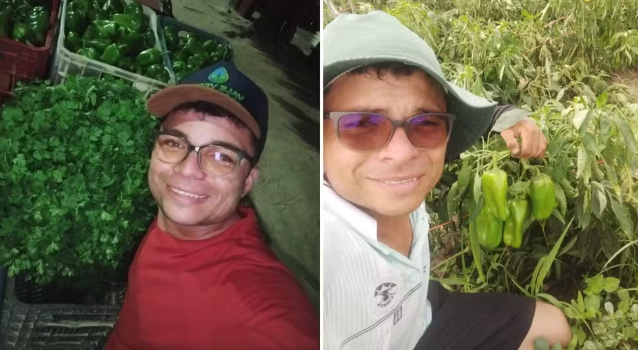

Jovens e mulheres agricultura familiar no Cariri; veja histórias e impacto
Novas gerações e força feminina transformam a produção rural em Juazeiro do Norte e região. Cooperativas e associações ampliam renda e oportunidades no campo.
Por Claudiana Mourato, Paulo Henrique Rodrigues 01/12/2025 19h43 Atualizado há 6 minutos
Jovens e mulheres impulsionam agricultura familiar no Cariri.Lucas Barbosa, de 27 anos, aprendeu a lidar com a roça desde cedo ao lado do pai. Hoje, colhe hortaliças e frutas com prática e sorriso no rosto.
“É o amor que move. É um trabalho muito pesado, mas a gente vai levando a vida. Quem começa na roça é difícil abandonar. Plantar uma muda, ver ela germinar e crescer, dar fruto, é muito gratificante para gente”, afirma o agricultor.
Clique aqui para seguir o canal do g1 Ceará no WhatsAppNo Sítio São Gonçalo, em Juazeiro do Norte, a diversidade impressiona: acerola, goiaba, manga, alface, abobrinha, entre outras frutas e hortaliças. A especialidade de José Rodrigues é a batata-doce. Para ele, qualidade é o mais importante.
“Não é só produzir, tem que ter qualidade e ter aonde entregar, para a cooperativa que a gente passa para lá”, destaca.
 Lucas Barbosa faz parte de projeto de agricultura familiar em Juazeiro do Norte — Foto: Arquivo pessoalOs dois fazem parte da agricultura familiar que sustenta 36 famílias na localidade. Entre os cerca de 150 agricultores, 15 são jovens.
Segundo Erislan Pereira, presidente da Cooperativa dos Agricultores Familiares do Cariri (COAFAC), a força da juventude tem ajudado a aumentar a produção. Atualmente, cerca de 20 toneladas de frutas e hortaliças são comercializadas por mês. Grande parte dessa produção vai diretamente para a alimentação de crianças e adolescentes das escolas de ensino infantil, fundamental e médio de Juazeiro do Norte.